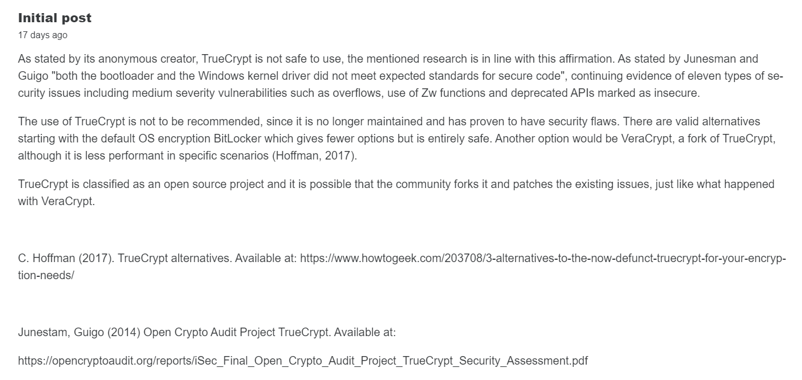
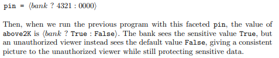

This portfolio follows a reflective model similar to a diary with chronological order.
Unit 1
Unit 1 starts with a discussion forum about security threats. The suggestion is to use
a list of security flaws provided by OWASP a non profit organization helping the web
to mantain a standard of security. Really interesting things coming out of this discussion with the
focus being on designing a UML model to represent the vulnerabnility chosen. I'll leave here below the first iteration of the model
that got better with the suggestions of the tutor and my colleague Marianne stimulating me to dive into the topic.
First model:

Second model:

Unit 2-3
Blog post

The discussion about Injection flaws can now be summarized, thanks to the stimulating responses from my colleagues, the topic has gone in
more depth than I could have done alone. Here's the post:

Buffer overflow
A comparison between C language and Python language, contrary to what you may think, also type safe languages like python may suffer from memory manipulation, for instance in Python there is a function vulnerable to memory attacks that has been out since python 2 and still is vulnerable in python 3, these Codio excersise gave the opportunity for a team discussion about Python vs C. What came out is that no programming language is totally secure and from that point of view the two are similar, they differentiate in many other ascpects. Python being a high level language, suited for many general purposes is portable and can enjoy a vast amount of libraries and an active community that made it a great language for machine learning, AI and many more. C is a low level language, less clear than Python but with much faster compiling times and particularly suited for operative systems, in fact many of the most popular operative systems rely for big parts of them on C language.Unit 4
Two important programming concepts we can extract from this week.
Hanoi tower and recursion
Recursion is a powerful tool in programming languages that enables programmers to solve complex problems, but we should really be careful of the space and time complexity that can be introduced by this technique. Hanoi tower, of which you can find an example down here (credits to Khan academy), is a classic example of the utility of recursion, with a complexity of O2^n - 1, considering a computer making 1000 moves per second even a small number of disks like 36 could take 2 years to solve and with the number going up to the famous 64 disks it takes 59 x 10^7 years to complete. Here below is my completion of the Hanoi tower riddle (credit: Khan academy)
Rgex
Regular expressions are a big aspect of programming, giving the ability to parse strings and select the desired contents they have the capability to avoid security issues such as SQL injection, search patterns in text and validate user inputs. The possibilities with regex compositions can vary from simple to extremely complex in an arbitrary manner. Here below there is a practical cheat sheet taken from Wikipedia that explains how characters are used in order to customize the desires search pattern.Unit 5
Starting with the incredibly discussed topic of testing, this unit's focus, the benefits and the essentiality of testing, especially in the secure software development section, are not in any doubt.
A discussion can be made about how and when it is better to test and for how long. Depending on the individual cases there are plenty of resources that guide developers to the best practices used by the community.
To cite the biggest non-profit organization that guides internationally developers towards security (OWASP) here is the LINK.
A particular attention is given to Cyclomatic complexity during this week, here I'll share some insights of discussion between team members and class. It is a commonly used metric to measure software complexity, that is often doubted due to its incompleteness to evaluate certain aspects of software
such as in measuring data complexity that has become a major part of software in modern times. It is although useful for certain purposes like quality metric and to give an idea
of the part of a software where is necessary to focus the testing efforts. I like to share a quick represantation of Cyclomatic complexity formula (credit to Geeks fro Geeks):
Unit 6
Design document submission week, the initial work for the developing of a secure software for the Ducth police department started with a design plan for the software itself, including
security decisions, tools and UML diagrams. I'll share here the activity diagram I generated for the project to give an idea of the design:

Also through the codio excersises we explored some powerful tools for code readability. Following the industry standards when it comes to code writing is a hugely important matter, PEP8 defines the standards for python, and it is the base for most
styling libraries such as stylint (library to enforce Python conventions). Experimenting with the code resulted in the evidence of a certain difference between flake8 and pylint, often regarded as fairly similar. Pylint is stricter when managing conventions errors (such as naming conventions) than flake8, while flake8 is easier to use and has many useful plugins.
Unit 7
SOA ontology
An ontology is something that refers to the purpose, aim and nature of something. It describes the conceptual implications of an object. When referred to SOA, which is a paradigm for service oriented architectures, it describes the standard for the creation of a SOA architecture based on classes and properties but also relations. From what I have understood and connected to the current module project an ontology can be used to clearly define entities in a certain domain. It seems to me to be pretty in line with OOP and so it can be really useful for the architectural definition of an application such as the one we are developing, from user role definition to the definition of the range of services the app can offer. Giving a way to share a reuse this knowledge in different scenarios (Munir and Anjum, 2018).
Flask and APIs

Flask is a common Python way to build APIs and web server that, through URLs, can communicate with a DB or server following REST APIs standards. In the screenshot I ran the python script with usual "python" command, then when we hit a URL that includes an existing user it returns informations for that user, instead when the user is not
present we'll see an error message on the screen. I think of it like the pythonic way of using express and NodeJS for JavaScript.
Unit 8
Encryption
I sperimented with encryption following the various suggestions found on
A particular technique that interested me is password encrypting, used to avoid storing plain text passwords in databases. Here I'll share the code and output, essentially using a locally generated key it symmetrically encrypts data to be stored.


The GDPR regulations is not too specific on encryption but requires it and states that appropriate encryption should be used, since this is an industry good practice (not to store plain text passwords) we could conclude that it follows GDPR guidelines.
Unit 9
Truecrypt
Didn't recieve much comments but we'll continue where we left. TrueCrypt is not safe anymore from the point of view of a regular customer, on the official website doesn't allow downloads anymore and even actively discourages data encryption through its software. The background on this is a bit shady because of the fact that development has been suddenly interrupted and a third party audit (crowdfunded) hasn't found vulnerabilities that couldn't be resolved if the developers wanted to maintain the project (compiler errors, non declared INTs and dirty code). At this there are also non technical reasons that TrueCrypt should be avoided: lack of clarity in the license, no developer support, not anymore maintained etc. But there are alternatives out there, from the default Microsoft's BitLocker to VeraCrypt which is built upon a fork of TrueCrypt and OpenSourcely maintained, which is always a good thing.
Unit 10
Faceted data
Faceted data is a strategy of securing information flow. As sustained by Schmidt this technique guarantees the combination of performance and the principal of non-interference as opposed to other methods explained in his paper here.
The aim of the technique is to not expose sensitive information to public flows and variables while maintaining a good single process performance as visualized in this snapshot of his paper:

In my opinion it can be a good solution to protect a system from exposing sensitive data, obviously it is not enough on its own and should be integrated with other measures that reinforce it. It is based on a label given to the data and a conditional statement that shows it only under certain conditions.
I'll try here to replicate it in python in its most basic form from Schmidt paper.

Unit 11
Micro vs Mono

Above there is my contribution to the micro vs mono discussion. The exchange of emails between Tannenbaum and Torvalds has been fun to read, really. I love the subtle irony with which they develop such complex arguments. My thougths are explained above, but it's amazing how we can read about this from a perspective completely different and blessed from the time we live in. How the portability and performance issues have evolved, and how the performances have increased. It's crazy if we think that at that time they had processors with as much as 450MHz speeds, while we now sit on commonly found processors of 3.6 GHz (AMD 5600). It is an amazing read and I'll leave the link here. To summarize my thoughts, till today microkernels still haven't won over monolithic ones, but as often happens since Aristotele's times the truth is in the middle. We have hybrid OS combining the two technologies and we'll probably move more and more toward a world where performance won't be a problem and the security features of microkernels will take over.
Unit 12
Reflective piece and quick thoughts
Here in the quick thoughts I'll focus on the module and last assignment, leaving the rest for the reflective piece.
In this module I found the first group project that I really enjoyed, despite the difficulties. It let me know better a couple of my colleagues which is always great. The project has been fun to make, with fun pair programming sessions and exploring new things. The module in general had some really interesting topics in which I tried to
participate as much as possible having to combine work and studies. I'll particularly remember the last topic about kernels and specifically the email exchange between Dr. Tannenbaum(microkernels) and Dr. Linus(Linux). It was a fun way of learning having the possibility to read such good discussions with a healthy dose of irony. Really a great proposal from the uni.
Amazing module, can't wait for the next one ( if I'll pass ;) )